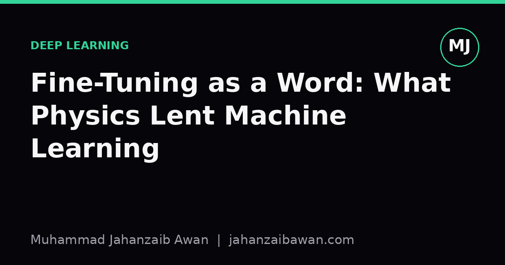

Fine-Tuning as a Word: What Physics Lent Machine Learning
Long before it meant adjusting a pretrained neural network, fine-tuning described a much older puzzle: why the universe's constants sit so precisely where they need to for anything, including us, to exist.

A word with a past
Every field ends up with jargon that sounds native but was smuggled in from somewhere else. In machine learning, 'fine-tuning' is one of these. We use it constantly: fine-tune a language model on domain text, fine-tune a vision backbone on a small labelled set, fine-tune the last few layers and freeze the rest. It sounds like an engineering term, something you'd hear from a mechanic adjusting a carburettor. And that intuition is not wrong, but it is incomplete.
The phrase has an older home in physics and cosmology, where 'fine-tuning' describes something much stranger than adjusting a model. It describes the observation that certain physical constants, things like the strength of gravity relative to electromagnetism, or the precise balance of energy densities in the early universe, appear to sit within an extraordinarily narrow range. Nudge them slightly and, by most calculations, you get a universe with no stable atoms, no stars, no chemistry, and certainly no observers around to measure anything. Physicists call this apparent narrowness the fine-tuning problem, and it has generated decades of debate about whether it points to deeper unifying laws, to chance among many universes, or to something else entirely.
I find this worth dwelling on for longer than a footnote, because the borrowing is not just a coincidence of vocabulary. It tells you something about what the term was doing before it arrived in our field, and once you notice that, the modern usage starts to look a bit different.
What the physics version actually claims
In the cosmological sense, fine-tuning is not something anyone does on purpose. Nobody adjusted the fundamental constants to make life possible. The term instead names a puzzle: certain values look as if they had been carefully selected from a vast space of possibilities, even though no selection process is known to have occurred. If the ratio between two of the fundamental forces were off by a very small fraction, the argument goes, stars would not form the way they do, or atomic nuclei would not hold together in the configurations chemistry depends on. The universe, in other words, sits in a narrow and seemingly improbable sweet spot.
This is a passive, almost eerie use of the word. It describes a state of affairs, not an action. Nobody is turning a dial. The 'tuning' is a metaphor for how precisely the constants happen to be set, and the debate is entirely about explaining that precision after the fact: is it evidence of some deeper constraint we haven't found yet, is it one outcome among many in a much larger multiverse where most regions are inhospitable, or is our reasoning about what counts as 'unlikely' simply flawed. There is no consensus, and that is fine, because the point here is not to resolve cosmology. The point is to notice the shape of the word before it moved house.
How the meaning shifted in ML
When machine learning adopted 'fine-tuning', the word kept its flavour of precision and narrow ranges, but it swapped the passive observation for an active process. In our usage, fine-tuning is something we deliberately do: take a model that has already learned broad, general-purpose representations from a large pretraining run, and then adjust its parameters, usually with a smaller dataset and a lower learning rate, so it specialises to a narrower task. A model pretrained on a huge, general corpus gets fine-tuned on customer support transcripts, or clinical notes, or legal documents, and it becomes noticeably better at that specific job.
Concretely, imagine a model pretrained until it reaches a broad, general level of competence on a wide range of text, then fine-tuned for a handful of epochs on a specialised dataset. In practice you often see meaningful improvement on the target task after fine-tuning, sometimes substantial, precisely because the pretrained weights already encode useful structure and the fine-tuning step only needs to nudge that structure, not build it from nothing. The learning rate is typically far smaller than during pretraining, because the model is already in a good region of parameter space and you don't want to knock it out of that region. That caution, the sense of making small, careful adjustments to something already close to correct, is exactly the sensibility the term carries over from physics: a narrow, seemingly precise adjustment, except now it is us doing the adjusting rather than the universe simply appearing that way.
What's interesting is that the active, intentional version we use in ML is arguably a cleaner fit for the word than the original cosmological one. In physics, 'fine-tuning' is a metaphor for something nobody actually did. In machine learning, it is a literal description of something we actually do. We picked up a word invented to describe an unexplained coincidence and turned it into a name for a controlled, repeatable engineering procedure.
Why the borrowing is worth remembering
This matters for more than trivia. The cosmological sense of fine-tuning carries an implicit warning that is easy to forget once the term becomes routine jargon: narrow, precise settings can look inevitable in hindsight while actually being fragile and hard to reproduce. A fine-tuned model that performs beautifully on a validation set can be sitting in a similarly narrow sweet spot, sensitive to the exact learning rate, the exact number of epochs, the exact composition of the fine-tuning data. Push slightly outside that region, change the distribution of the deployment data even a little, and performance can drop sharply, the same way the physicists' hypothetical universe collapses into something uninhabitable if a constant shifts by a fraction.
Practically, this is a reason to treat fine-tuned checkpoints with the same scepticism cosmologists apply to fine-tuned constants: ask why this particular setting works, not just that it works. Report the sensitivity of your results to learning rate and data size, check that improvements survive a proper held-out split rather than a lucky seed, and be honest about how narrow the sweet spot really is. The word came from a field obsessed with explaining precision rather than merely celebrating it, and that habit of mind, treating a good result as a question rather than a trophy, is worth keeping every time we use the term.